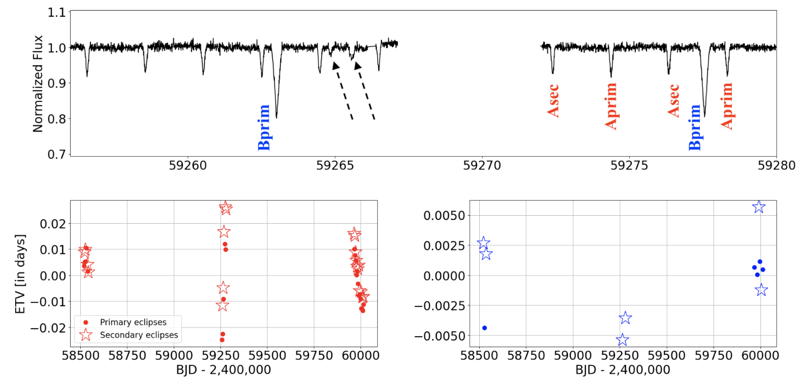
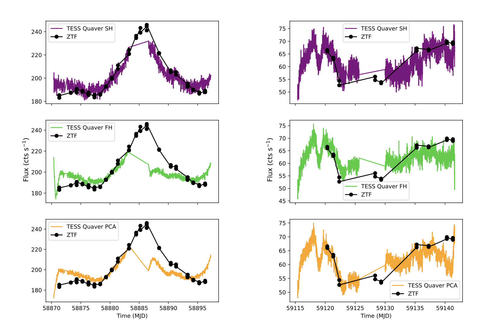
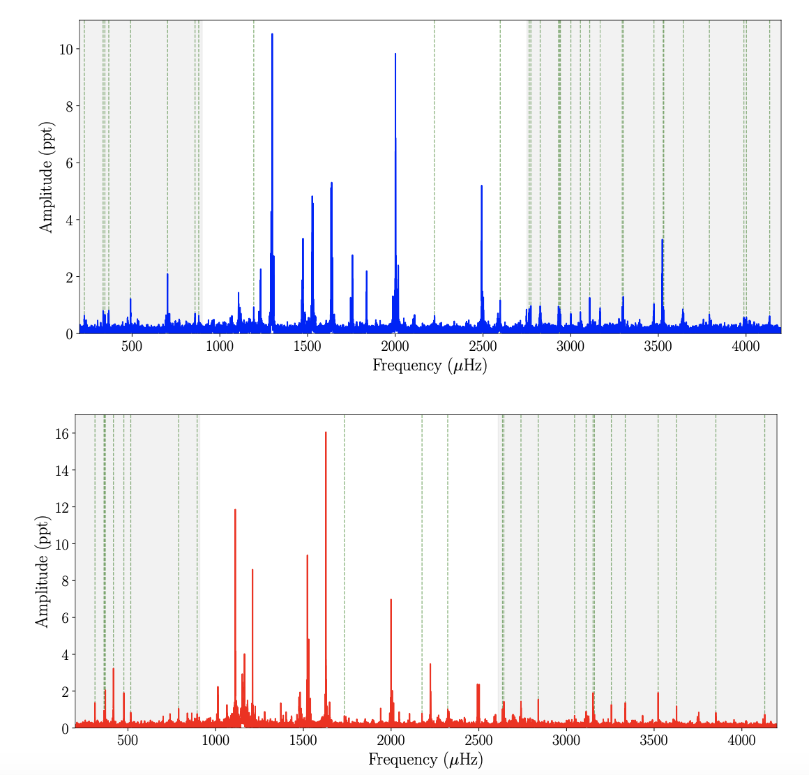

Welcome TESS followers to our latest news bulletin!
This week, we are looking at three recent papers from the archive. Enjoy!
101 Eclipsing Quadruple Star Candidates Discovered in TESS Full Frame Images (Kostov et al. 2023) :
Multiple stellar systems represent a natural outcome of stellar formation and evolution, come in a wide variety of orbital configurations, and span a range of physical properties and evolutionary stages. These systems present excellent opportunities to test theoretical models of stellar astrophysics and study in detail the corresponding processes and mechanisms in dynamically-complex environments. Kostov et al. (2023) present the TESS-enabled discovery and characterization of 101 new quadruple star candidates. The targets have a 2+2 hierarchical configuration and contain two eclipsing binary stars producing two distinct sets of eclipses in TESS data. The candidates have all been detected by visual inspection of the respective TESS photometry, using long-cadence light curves from Sectors 1 through 54, performed by a dedicated team of citizen scientists. The authors perform detailed pixel-level analysis and utilize comprehensive photocenter measurements to rule out common false positives and confirm that the corresponding target is the source of both sets of detected eclipses. As an additional layer of scrutiny, Kostov et al. (2023) confirmed that the two sets of eclipses detected in TESS data are also present in archival photometry from the ASAS-SN, ATLAS, and ZTF surveys where crowding is less of a concern. A number of targets show prominent eclipse timing variations, suggesting dynamical interactions between the two component subsystems, several candidates have outer orbits confirmed by Gaia measurements, and one system is a potential quintuple candidate with a (2+1)+2 hierarchical configuration. Thanks to TESS data, Kostov et al. (2023) were able to significantly increase the number of uniformly-vetted quadruple star candidates.
The Rapid Optical Variability of the Nearby Radio-Loud AGN Pictor A: Introducing the Quaver Pipeline for AGN Science with TESS (Smith & Sartori 2023) :
About one in ten Active Galactic Nuclei (AGN) produce powerful jets that can often dwarf in size the host galaxy itself. These jets act as an important feedback mechanism in the evolution of galaxies and represent an active area of research. Jets are typically observed in radio frequencies and can exhibit complicated variability patterns in the optical regime, likely driven by the complex underlying accretion processes. Smith & Sartori (2023) present a new, publicly-available software tool (Quaver) specifically designed for the extraction of high-cadence TESS photometry of extended faint sources, and utilize it to perform a comprehensive analysis of the optical variability of the AGN in Pictor A. The target is the nearest broad-line radio galaxy (z = 0.035) with a prominent double-lobe structure, a parsec-scale jet, a gamma-ray emitter, and a supermassive black hole with an estimated mass of M= 5.9 × 106 MSun. TESS observed Pictor A in Sectors 3, 4, 5, 31, and 33 and produced photometric variability consistent with a damped random walk model characterized by both stochastic variations and flares. To take into account the contribution of scattered light to the lightcurves of extended sources such as AGNs and remove it from the TESS photometry, Quavor uses three different methods: a simple hybrid approach, a full hybrid method, and principal component analysis. Utilizing the tool, Smith & Sartori (2023) measured characteristic variability timescales of about 1 day when flares dominate the TESS photometry and about 3 to 6 days for the rest of the lightcurve, both in line with expectations based on the mass of Pictor A’s black hole, and consistent with those of similar radio-loud AGNs. Utilizing TESS photometry, the authors present a detailed temporal and spectral analysis of the optical variability of the benchmark AGN Pictor A.
Asteroseismological analysis of the polluted ZZ Ceti star G29-38 with TESS (Uzundag et al. 2023) :
ZZ Ceti stars are pulsating white dwarfs with effective temperatures of ~10,000 - 14,000 K and H-rich atmospheres exhibiting multiple periods in the range of ~100 - 1,400 sec. At a distance of 17.5 pc and with a magnitude of V = 13 mag, G29-38 is one of the closest and brightest such pulsators, and a prime laboratory to study this class of pulsators. Uzundag et al. (2023) present a thorough analysis and detailed asteroseismological modeling of the pulsation properties of G29-38 using TESS data. The target was observed by the spacecraft in Sectors 42 and 50 in 2-min and 20-sec cadence, respectively, and produced a complex frequency spectrum in the ~100 to ~4,500 micro Hz regime. Utilizing a nonlinear least square algorithm, Uzundag et al. (2023) detected g-mode associated 60 frequencies in Sector 42, and 66 frequencies in Sector 50 above a detection limit of 0.1% false alarm probability of about 0.5 parts-per-thousand, as well as about 30 combination frequencies in each sector. Altogether, the authors measured a median noise level of about 0.1 parts-per-thousand of the Fourier Transform and a signal-to-noise of the detected frequencies in the range of ~5-150. Uzundag et al. (2023) marked 28 of the Sector 42 frequencies and 38 of the Sector 50 frequencies as significant, with periods from ~260 sec to ~1,400 sec, and found four complete triplets and one quintuplet with mean separations of 4.67 micro Hz and 6.67 micro Hz, respectively, corresponding to a rotation period of about 1.35 days. The authors derived an effective temperature of Teff = 11,635 K, surface gravity log g = 8, mass of 0.632 MSun, mass of H envelope of 5.6x10-7 MSun, radius log(R/RSun) = -1.9, luminosity log(L/LSun) = -2.6, and distance of 17.54 pc, consistent with previous results and in line with other ZZ Ceti pulsators with similar characteristics. Thanks to data from TESS, Uzundag et al. (2023) were able to obtain precise measurements of a bright, nearby ZZ Ceti pulsator.

Fig. 1: Taken from Kostov et al. (2023). TESS photometry of the (2+1)+2 quintuple star candidate TIC 37376063, producing two sets of eclipses (labeled as binaries A and B) as well as an additional pair of events (marked with dashed arrows) suggesting tertiary eclipses on binary A.

Fig. 2: Taken from Smith & Sartori (2023) (2023). TESS photometry of the radio-loud AGN Pictor A, extracted with the new Quavor software tool using three different methods (simple-hybrid in upper panel, full hybrid in middle panel, and principal component analysis in lower panel), compared to ground-based observations from ZTF (black symbols).

Fig. 3: Taken from Uzundag et al. (2023). Fourier transform of the Sector 42 TESS data (upper panel) and Sector 50 data (lower panel) of the ZZ Ceti pulsator G29-38. Detected combination frequencies are marked with vertical dotted lines; the shaded areas represent the regimes where most of these are found.